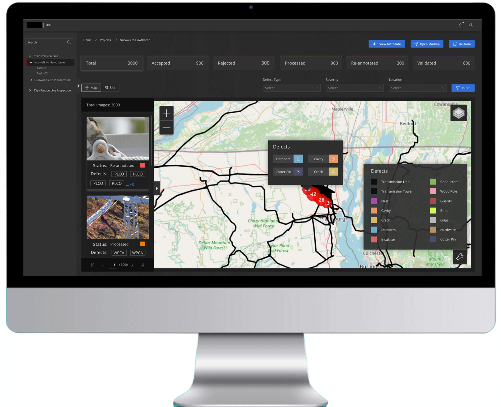

Project Overview
High tension towers are critical infrastructure for transmitting electricity over long distances, requiring regular health inspections to ensure reliability and prevent catastrophic failures. This case study showcases how user-centered design and drone technology transformed traditional inspection methods, eliminating life-threatening climbing risks and reducing inspection time by 75% while achieving 40% better defect detection and 85% cost savings compared to helicopter inspections.
Problem Statement
Traditional tower inspection methods required inspectors to risk their lives climbing structures or spend thousands per tower on helicopter inspections, with each inspection taking 4-6 hours and often missing critical defects until they became dangerous. The challenge was designing an intuitive drone-based application that would work seamlessly in harsh field conditions with minimal training, while providing automated flight control, AI-enhanced defect detection, and streamlined reporting to enable faster, safer, and more accurate inspections.
Pain Points
Safety Risks
"Every time we climb those towers, we're putting our lives at risk. One wrong move and it's over."
— Tower Inspector
High Costs
"Helicopter inspections cost us thousands per tower, and we have hundreds to inspect annually."
— Maintenance Manager
Time Inefficiency
"A single tower inspection takes 4-6 hours. We're constantly behind schedule."
— Lead Engineer
Limited Data Quality
"By the time we spot a defect during manual inspection, it's often already critical."
— Field Inspector
Design Process
Research Phase
Conducted comprehensive research to understand current pain points, workflows, and requirements through multiple methodologies.
🎤
Stakeholder Interviews
Conducted interviews with tower inspectors, maintenance teams, and engineers to understand current pain points, workflows, and requirements.
👀
Observational Studies
Observed inspectors conducting traditional tower inspections to identify inefficiencies and areas for improvement.
📊
Surveys
Distributed surveys to inspectors and maintenance teams to gather feedback on the proposed drone-based solution.
Key Research Insight
Inspectors needed a solution that worked seamlessly in field conditions with minimal training requirements.
User-Centered Design Principles
Based on our research, we established core principles:
✨
Simplicity First
Reduced cognitive load through intuitive navigation and clear visual hierarchy
🌍
Field-Optimized
Designed for outdoor visibility and touch-friendly controls with gloves
🔍
Data Transparency
Made AI detection results explainable with visual annotations
🔄
Workflow Integration
Aligned with existing inspection protocols to minimize disruption
Analysis: Design Collaborative Deliverables
- Created user flows mapping drone deployment, flight control, and defect reporting workflows for field inspectors
- Developed information architecture optimized for field conditions with minimal cognitive load
- Mapped user journeys for inspectors, maintenance teams, and engineers across different inspection scenarios
Prototyping, Testing & Iteration
Created low-fidelity wireframes and high-fidelity prototypes to visualize the application's layout, navigation, and key features.
- Low fid prototypes → 10 field inspectors
- High fid Interactive Figma → 18 users (inspectors, engineers, managers)
- Functional field pilots → 25 inspectors across 3 energy companies
Initial prototype testing revealed navigation complexity — simplified menu structure by 40%
Data analysis interface was overwhelming — introduced progressive disclosure and contextual help
Reporting workflow had too many steps — reduced from 7 clicks to 3 clicks
Critical Iteration: AI Defect Detection visualization evolved through 5 versions. Final overlay annotation system achieved 92% inspector confidence vs 45% with initial text-only alerts.
Iteration Impact
Usability satisfaction score improved from 62% to 88% across three testing rounds.
Design Solution
A drone-based inspection application that transforms tower health monitoring through five key features:
📊
Centralized Inspector Dashboard
Consolidates all tower data, inspection history, and maintenance schedules in one view, eliminating the need to switch between multiple systems and reducing pre-inspection planning time by 60%.
Why It Works: Single source of truth for all inspection data
🚁
Integrated Drone Control Interface
Real-time drone deployment and flight control with automated flight paths ensures consistent coverage of all tower components, reducing human error and inspection time from hours to 30 minutes.
Why It Works: Automated precision reduces inspection time by 75%
🤖
AI-Enhanced Data Analysis Tools
Automated defect detection algorithms analyze high-resolution imagery instantly, identifying corrosion, cracks, and structural anomalies that human eyes might miss, improving detection accuracy by 40%.
Why It Works: AI catches what humans miss
📝
Template-Based Reporting System
Pre-configured report templates with auto-populated inspection data cut report generation time from 2 hours to 15 minutes, enabling faster decision-making.
Why It Works: Instant reports enable same-day decisions
⚠️
Maintenance Prioritization Engine
Automatically categorizes defects by severity and schedules maintenance, ensuring critical issues are addressed first and reducing tower downtime by 35%.
Why It Works: Critical issues get immediate attention
Impact & Results (Quantitative Metrics)
55%
Customer Success Rate in Implementation
60%
Reduction in Pre-Inspection Planning Time
75%
Faster Inspection (6 hours → 90 minutes)
40%
Improvement in Defect Detection Accuracy
35%
Decrease in Tower Downtime
85%
Cost Savings vs Helicopter Inspections
Qualitative Feedback
The final dashboard provides comprehensive tools for managing inspections, analyzing data, and generating reports with an intuitive, user-friendly interface.
"This app has completely changed how we work. What used to take all day now takes an hour, and we're catching issues we would have missed."
— Senior Inspector
"The safety improvement alone justifies the investment. Our team feels much more confident going into inspections."
— Operations Director
"The reporting feature is a game-changer. We can now make maintenance decisions the same day as inspection."
— Engineering Manager
Key Learnings
What Worked
- Co-creation with users: Daily stakeholder collaboration (30% project impact) ensured the solution addressed real needs, not assumed ones
- Iterative testing: Continuous user feedback (25% project impact) prevented costly late-stage redesigns
- Progressive complexity: Starting with core workflows and adding advanced features incrementally increased adoption
What to Improve
- Offline functionality: Field inspectors often work in areas with limited connectivity — need robust offline mode
- Training materials: While intuitive, comprehensive video tutorials would accelerate onboarding for less tech-savvy users
- Cross-platform consistency: Tablet and mobile experiences need better parity for field flexibility
Core Takeaway
Success in industrial UX design comes from spending more time in users' shoes than at your desk. The 55% success rate and overwhelmingly positive feedback stemmed directly from embedding with inspectors during research, validating assumptions through testing, and ruthlessly prioritizing features that saved time and lives over features that looked impressive in demos.